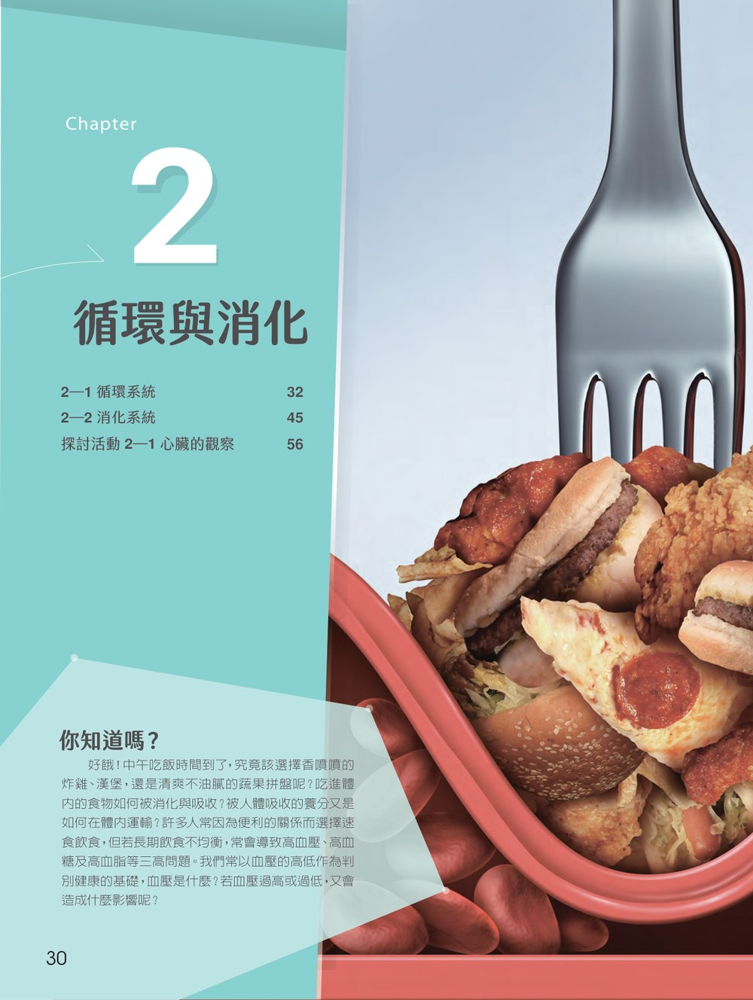
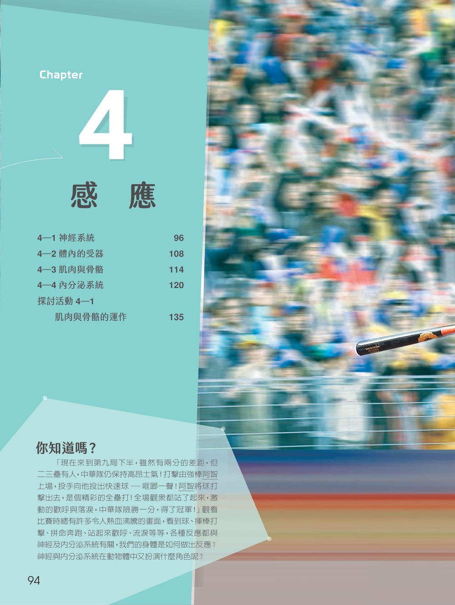

CHAPTERS
選擇章節，開始探索
點選章節封面進入章節，瀏覽每一節的課本概念圖、重點簡介與教學影片。

CHAPTER 01 · Organization & Homeostasis
第 1 章 動物體的組成與恆定性
- 1-1動物組織的構造與功能
- 1-2恆定的生理意義與重要性

CHAPTER 02 · Circulation & Digestion
第 2 章 循環與消化
- 2-1循環系統
- 2-2消化系統

CHAPTER 03 · Respiration & Excretion
第 3 章 呼吸與排泄
- 3-1呼吸系統
- 3-2排泄系統

CHAPTER 04 · Sensing & Response
第 4 章 感應
- 4-1神經系統
- 4-2體內的受器
- 4-3肌肉與骨骼
- 4-4內分泌系統

CHAPTER 05 · Immune Defense
第 5 章 防禦
- 5-1免疫系統
- 5-2先天性免疫
- 5-3後天性免疫
- 5-4免疫失調與排斥

CHAPTER 06 · Reproduction
第 6 章 生殖
- 6-1生殖系統
- 6-2配子的形成
- 6-3受精過程
- 6-4胚胎發育與懷孕
QUICK ACCESS
全部優化版互動網頁快速入口
老師上課或學生複習時，可直接開啟各節的優化版互動教學網頁（另開新分頁）；教學影片請由章節頁進入。